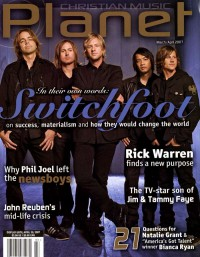

CMnexus
:
Contemporary Christian culture, music, and media.
Magazines
Profiles
Dove Awards
cmnexus.org
CM
nexus
→
Profiles
→
C
→
Carol Crenshaw
Carol Crenshaw
Writing credits listing
Sep 2002 in
Christian Music Planet
"Five: Jennifer Knapp"
Jennifer Knapp
"Four: Rachael Lampa"
Rachael Lampa
Nov 2002 in
Christian Music Planet
"Delirious cuts a path between worlds"
Delirious?
Mar 2003 in
Christian Music Planet
2.2
21 Things You Always Wanted To Know About...:
Sara Groves
"Encountering God"
Luis Palau
Jan 2004 in
Christian Music Planet
3.1
21 Things You Always Wanted To Know About...:
Bebo Norman
Read:
Faith, God, and Rock & Roll
Jan 2005 in
Christian Music Planet
4.1
21 Things You Always Wanted To Know About...:
Jeremy Camp

Mar 2007 in
Christian Music Planet
6.2
"Inside The Minds of Switchfoot"
Switchfoot
21 Things You Always Wanted To Know About...:
Bianca Elliot
&
Natalie Grant
CMnexus
(noun)
The magazine index
of modern music
and Christianity
© 2011 CMnexus. Last updated April 2021.
Contact:
Rants and other correspondence to:
editor -AT- cmnexus
-DØT- org
About